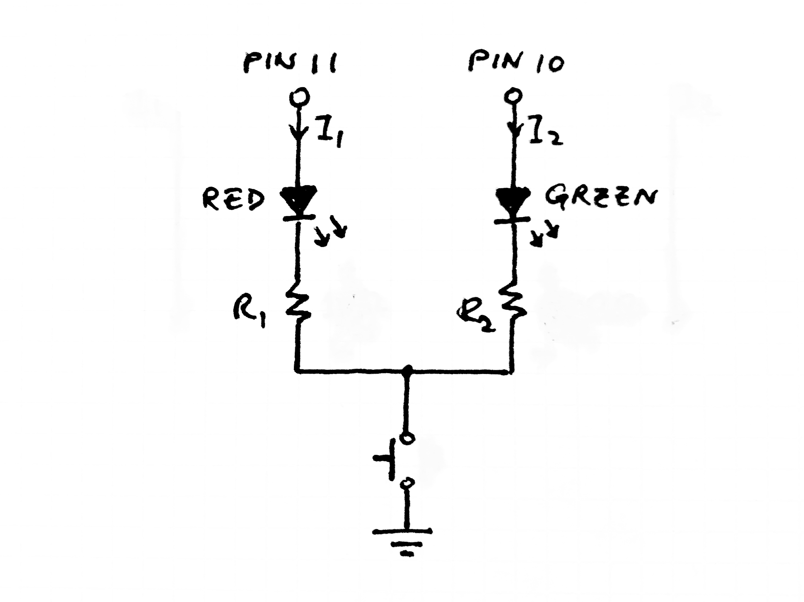
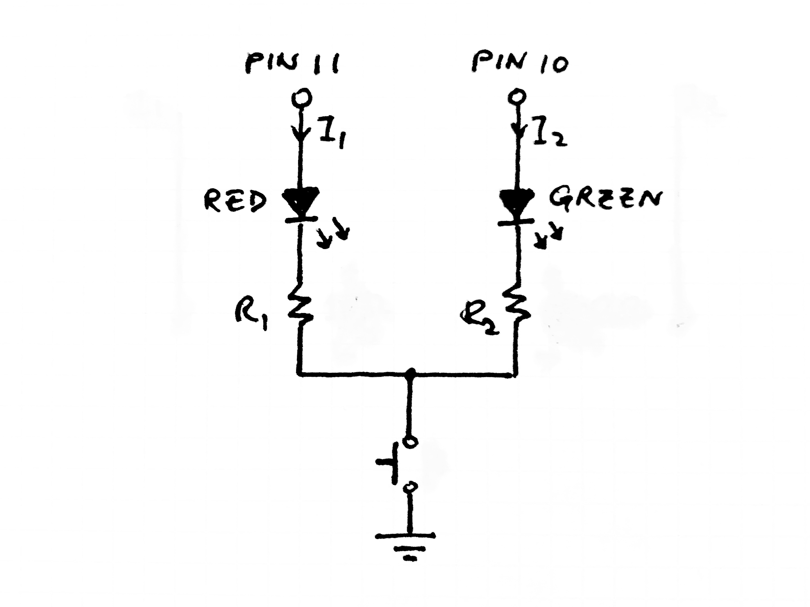
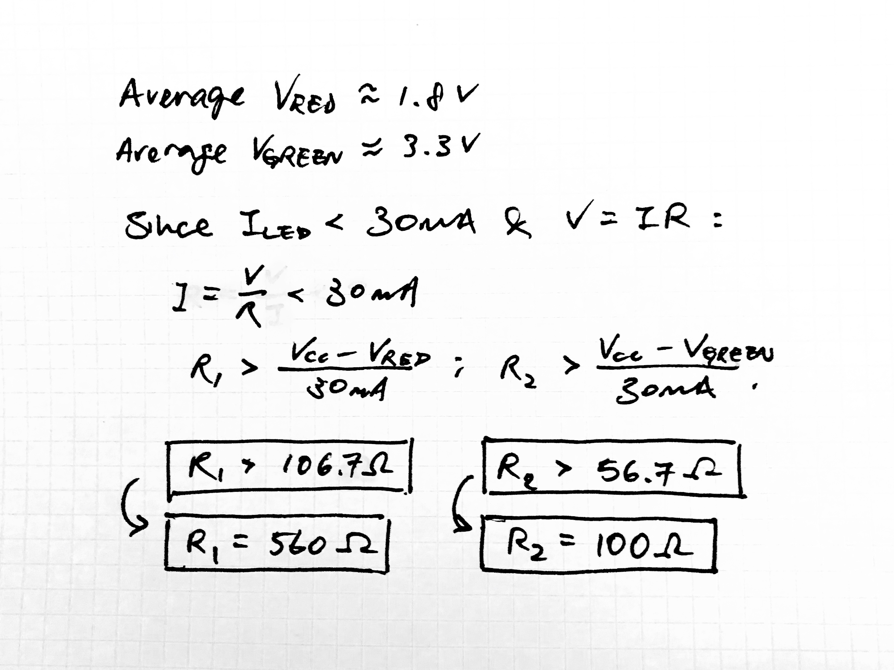
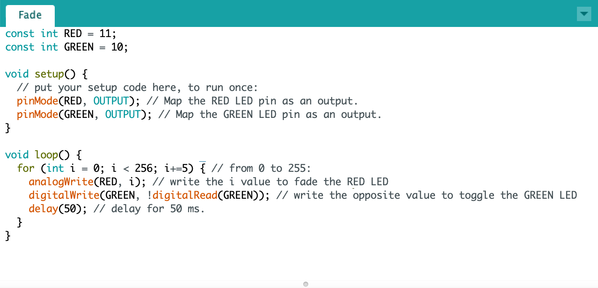
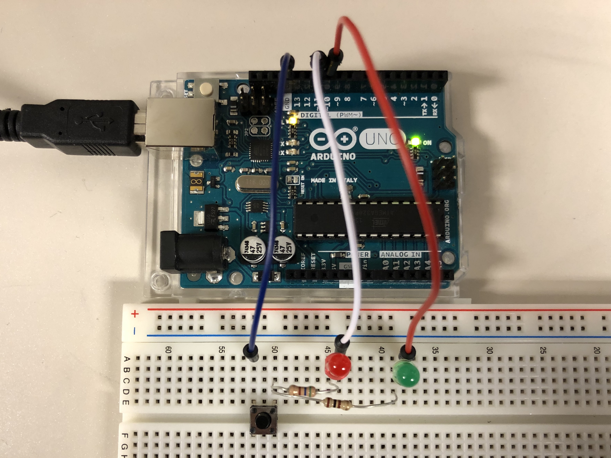

Schematic

In this circuit, both red and green LEDs are connected in parallel through pins 11 and 10 respectively. Each LED is then connected to a resistor in series, where the two routes then converge to a single push button and then to ground.
Prompt: Create a circuit that utilizes LEDs, resistors, and pushbuttons while using the functions analogWrite, digitalWrite, and digitalRead.

Schematic

In this circuit, both red and green LEDs are connected in parallel through pins 11 and 10 respectively. Each LED is then connected to a resistor in series, where the two routes then converge to a single push button and then to ground.
Calculations

The Arduino I/O pins only allow a maximum of 40mA whereas the LEDs only allow a maximum of 30mA. Hence, the calculations are made based on the bottleneck value of 30mA.
Arduino .ino File

As shown in the code, the red LED is used as the fading LED and the green LED is used as the blinking LED. In this for loop, the fade is accomplished by writing (analogWrite) the increment value i and the blinking is accomplished by writing (digitalWrite) the opposite of the previous value (digitalRead) on the green LED pin.
Circuit
